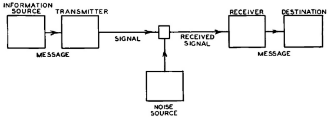

Open data
Figure importanti
Figure importanti
Nel 1937 scrive la tesi di laurea dove applica l'algebra boolena a un circuito elettronico. Ingegnere, padre dell'informatica pubblica nel 1948 "A mathematical theory of communication", il primo documento scientifico ad introdurre i bit. Crea un dispositivo capace di uscire da un labirinto, precurse dell'AI. La sua semplice ma importante teoria poneva una comunicazione tra trasmettitore e ricevitore con un possibile errore, mettendo entrambi i termini come probabilità del messaggio e probabilità dell'errore.
La sua teoria si elevava rispetto alle altre perchè riusciva a semplificare il concetto di comunicazione di informazioni, tralasciando tutti gli aspetti già conosciuti e focalizzandosi sull'obiettivo.
Fu colui che nel 1989 invento il World Wide Web(WWW), fondò ed ora è il direttore del World Wide Web Consortium(W3C). Instaurò la prima comunicazione tra client e server al CERN di Ginevra, pubblicando così il primo sito web. Per fare ciò dovette creare la prima versione del protocollo http, il linguaggio HTML; creò il server web httpd che poi si evolse in Apache2.
Fu una delle prime persone che promosse gli Open Governament Data in tutto il mondo, suggerendo di condividere i dati con lo schema delle 5 stelle. Diventato poi co-direttore dell'Open Data Institute nel 2011. La sua idea è quella di rendere internet un posto accessibile a chiunque sove i dati potevano essere condivisi facilmente e usufruibili da parte di tutti..

Barack Obama ha ricoperto un ruolo importante nella proliferazione degli Open Data nel mondo e sopratutto negli Stati Uniti. Nel 2009 fu pubblicato Data.gov, fu il primo portale per gli open data delle agenzie federali, il quale ha pubblicato più di 180.000 set di dati.Nel 2013 ha firmato un disegno di legge sulla standardizazione e la pubblicazione dei dati governativi negli USA, permettendo al governo una maggiore trasparenza con i cittadini.